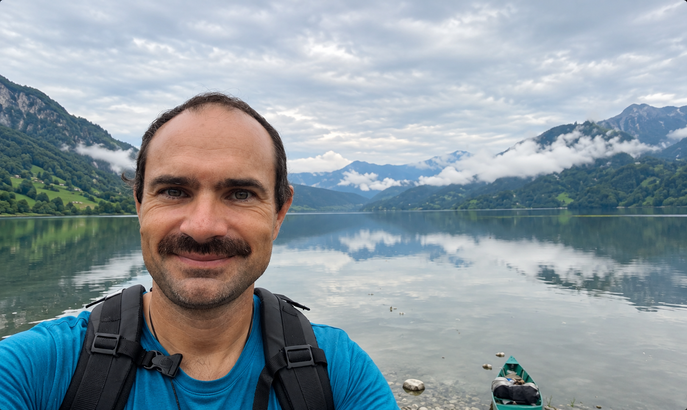
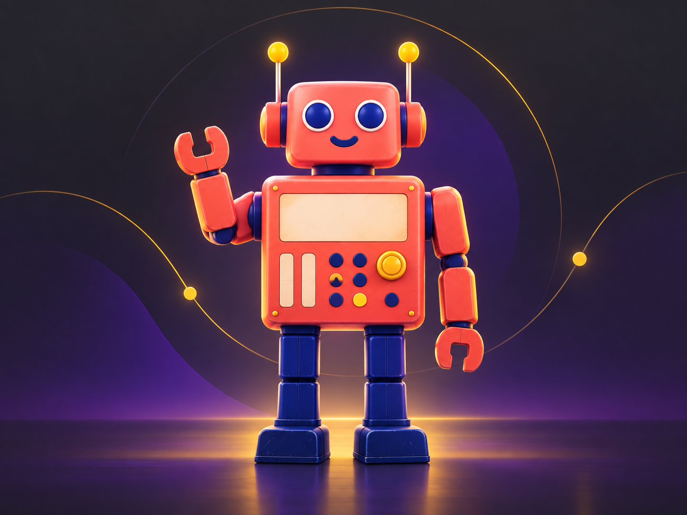

Audit & priorités
Cartographier les tâches, estimer les gains possibles et choisir les premiers chantiers.
COMPRENDRE AVANT D'AGIR ↗De vos problèmes quotidiens aux solutions qui comptent vraiment. Un interlocuteur pour comprendre, décider et mettre en place l’IA dans votre PME.
Parlons de votre entrepriseDes demandes qui s'accumulent, des informations dispersées, des tâches répétées. On commence par écouter ce qui se passe vraiment.
01 / NOTRE RÔLE
L'IA évolue vite. Votre entreprise a surtout besoin de savoir où agir, dans quel ordre et avec quels moyens. Nous faisons le lien entre votre activité, vos équipes et les solutions disponibles.
Observer votre façon de travailler et repérer les vrais points de friction.
Alléger le processus avant de chercher à l'automatiser.
Intégrer les bons outils et aider les équipes à s'en servir.
Votre entreprise évolue. Votre accompagnement IA aussi.
UN INTERLOCUTEUR02 / DOMAINES D'INTERVENTION
Chaque intervention part d'un besoin concret. Nous choisissons ensemble ce qui mérite d'être fait maintenant.
Cartographier les tâches, estimer les gains possibles et choisir les premiers chantiers.
COMPRENDRE AVANT D'AGIR ↗Relier les bons outils pour réduire les ressaisies, les relances et les oublis.
FLUIDIFIER LE QUOTIDIEN ↗Donner accès aux bonnes informations et aider à préparer, analyser ou rédiger.
AIDER À MIEUX TRAVAILLER ↗Former sur des cas métier, mesurer les résultats et ajuster les usages dans le temps.
FAIRE DURER LES GAINS ↗03 / DANS VOTRE QUOTIDIEN
Quelques situations où une meilleure organisation et des outils adaptés peuvent faire une différence.
Discutons de votre situationLes mêmes informations sont recherchées encore et encore.
↗Les comptes rendus et les relances attendent la fin de journée.
↗Les données passent d'un outil à l'autre à la main.
↗Vous ne savez plus quels outils IA méritent votre attention.
↗04 / L'ÉQUIPE
Jérôme pilote l'accompagnement. Charles l'assiste dans la recherche, l'analyse et la préparation des missions.

Manager IA externalisé. Il accompagne les entreprises de l'analyse de leurs besoins jusqu'à l'adoption des solutions par leurs équipes.

Un assistant IA utilisé pour la recherche, la synthèse et la préparation. Jérôme garde la responsabilité des choix et des échanges avec vous.
05 / ZONE D'INTERVENTION
Nous sommes basés à Manosque, en plein cœur du bassin manosquin. L'essentiel de l'accompagnement — échanges en binôme, ateliers, suivi de terrain — se fait en présentiel, à moins de quarante minutes de route. Au-delà, la visio prend le relais sans rompre le fil du suivi.
Carte simplifiée, non à l'échelle — temps de trajet approximatifs depuis Manosque.
06 / COMMENÇONS PAR VOTRE ENTREPRISE
Décrivez simplement votre activité et vos difficultés. Le premier échange sert à voir où agir utilement.
Le formulaire n'est pas encore connecté. Ajoutez son adresse dans script.js avant la mise en ligne.
07 / QUESTIONS FRÉQUENTES
Pour avoir un interlocuteur qui suit le sujet dans la durée : comprendre les besoins, prioriser les usages, coordonner la mise en place et accompagner les équipes.
Nous examinons d'abord vos outils actuels. Les changements proposés dépendent du problème à résoudre et de ce que votre environnement permet déjà.
Oui. Le point de départ est un problème concret et un périmètre raisonnable, avec des étapes adaptées à vos moyens.
Oui. La formation s'appuie sur les outils choisis et sur les cas que les équipes rencontrent réellement.
Le choix des services, les accès accordés et les données transmises sont étudiés selon vos besoins et vos exigences. Ces points sont abordés avant toute mise en place.